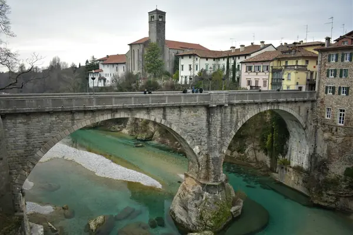

Home › Wine regions › Friuli-Venezia Giulia
Friuli-Venezia Giulia wine region

Photo: Tomasz Anusiewicz on Unsplash
Some of Italy's finest whites, plus orange wines.
Vines grow in all 20 regions. Wines are classed DOCG, DOC and IGT.
Notable producers in Friuli-Venezia Giulia
- Jermann
- Livio Felluga
- Gravner
- Vie di Romans
- Schiopetto
Friuli-Venezia Giulia wines to try
Jermann Vintage Tunina
Friuli-Venezia Giulia · Venezia Giulia · Sauvignon Blanc, Chardonnay, Ribolla Gialla, Malvasia
Rich field-blend white: honey, ripe pear, flowers and herbs, long and textured.
Food: Seafood risotto, white meats, mild cheese
Schiopetto Friulano
Friuli-Venezia Giulia · Collio · Friulano
Creamy texture, almond, pear and wild herbs with a bitter-almond finish.
Food: Prosciutto di San Daniele, asparagus, frittata
Specogna Pinot Grigio Ramato
Friuli-Venezia Giulia · Friuli Colli Orientali · Pinot Grigio
Skin-contact copper-coloured Pinot Grigio: pear, spice and texture.
Food: Charcuterie, risotto
Livio Felluga Pinot Grigio
Friuli-Venezia Giulia · Friuli Colli Orientali · Pinot Grigio
Structured Friuli Pinot Grigio: pear, almond and fresh finish.
Food: Fish, antipasti
More wine regions in Italy
See Friuli-Venezia Giulia on the wine map
The Wine Reference newsletter
New wines, stories and career guides, one email a week at most.
Over 18s only. Unsubscribe any time with one click. Your email is stored securely by Kit and never shared.
Support The Wine Reference
This guide is free, with no paywall. If it helped you choose a bottle, you can buy me a glass and keep it growing.
🍷 Buy me a glass